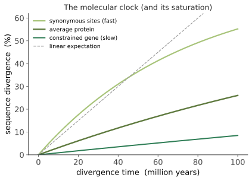

演化 II · 中性理论与分子钟
证据地位：中性理论作为零模型【实】（已成为分子演化的标准框架）；中性 vs 选择的相对比重【争】（"中性主义–选择主义之争"的余绪仍在）。 上一页讲选择的力量，本页讲它的沉默。Kimura 在 1968 年提出一个当时近乎异端的主张：分子层面的绝大多数演化变化不是由选择驱动的，而是中性突变的随机漂变。 这引发了演化生物学史上最激烈的争论之一，最终重塑了整个领域——今天它是分子演化的零假设。
一、动机：两个当年的数据难题
Kimura 的主张不是哲学思辨，而是被数据逼出来的。
① 分子多样性太高。 早期蛋白电泳发现自然群体中的蛋白多态性远超预期。若每个多态位点都由平衡选择维持，遗传负荷（因个体偏离最优基因型而损失的适应度）将高到群体无法承受。
② 分子演化速率太恒定。 蛋白序列的替换速率在不同谱系间近似恒定，且与形态演化速率脱钩。若替换由选择驱动，速率应随环境变化而剧烈波动——环境变化显然不恒定。
中性解释同时化解两者：若多数替换是中性的，就没有负荷问题；而中性替换的速率恰恰恒定（下节）。
二、中性理论的核心结果
最漂亮的结论：对严格中性的突变，
替换率等于突变率，与群体大小无关。 这个"\(N\) 消掉了"的结果是中性理论的支柱：它解释了为什么分子演化速率可以如此恒定——因为它只反映突变率，而突变率由生化过程决定，相对稳定。
这就是分子钟的理论基础：若中性替换以恒定速率累积，两个物种间的序列差异就正比于分歧时间，可用于推断分歧年代（需用化石标定速率）。

分子钟不是精确的钟：速率随谱系、世代时间、代谢率、DNA 修复效率而变（"放松的分子钟"模型允许速率变异），且长时段需校正多重替换。但作为一阶近似，它是重建生命史的核心工具。
三、近中性理论：更符合现实的版本
Ohta 的近中性理论是重要修正。现实中很少有严格中性的突变，更多是轻微有害的。承线三第二页的判据：
推论极强，而且是可检验的：
- 小 \(N_e\) 的物种（大型哺乳动物、岛屿群体）中，轻微有害突变无法被有效清除，会随机固定 → 基因组"退化"、积累冗余与转座子（承线三第四页的洋葱悖论解释）；
- 大 \(N_e\) 的物种（细菌、果蝇）中，选择效率高 → 基因组紧凑、密码子使用偏好明显（连"用哪个同义密码子"这种微弱效应都能被选择优化）。
同一个突变的命运取决于群体大小——这个洞见把群体遗传学、基因组结构与物种生活史统一起来，是现代分子演化的骨架。
四、检验选择：几个实用统计量
中性理论最大的实用价值是充当零模型：偏离中性预期的地方，就是选择留下的痕迹。
① dN/dS（\(\omega\)）：非同义替换率与同义替换率之比。同义位点近似中性作基线。
| \(\omega\) | 解释 |
|---|---|
| \(\omega < 1\) | 纯化选择（大多数功能基因，蛋白序列被保守） |
| \(\omega \approx 1\) | 中性演化（如假基因） |
| \(\omega > 1\) | 正选择（罕见，常见于免疫基因、精子蛋白、病毒表面抗原——它们处在军备竞赛中） |
② Tajima's D：比较两种遗传多样性估计量（基于核苷酸多样性 \(\pi\) 与基于分离位点数）。中性平衡群体下期望约 0；负值提示近期选择性清除或群体扩张（大量低频变异），正值提示平衡选择或群体收缩。注意：人口历史与选择会产生相似的信号，这是该领域长期的识别难题。
③ 选择性清除（selective sweep）：一个强有利突变快速固定时，会把周围连锁的中性变异一起带上去（搭便车），在基因组上留下一段多样性降低的区域。人类中的经典例子：乳糖酶持续性（LCT 附近）在欧洲与东非牧民群体中有强清除信号——这是人类近期选择最清楚的案例之一。
五、这场争论的现状【争】
"中性主义 vs 选择主义"的极端立场都已退场，但相对比重仍在争论：
- 共识部分：绝大多数氨基酸替换与非编码变异的固定是中性或近中性的；纯化选择广泛存在（多数突变被清除）。
- 争论部分：适应性替换占多大比例？果蝇中的估计相当高（部分研究认为约半数氨基酸替换由正选择驱动），人类中则低得多。方法学分歧（如何区分人口历史与选择）是争论的核心。
- 新的复杂性：连锁选择（背景选择与反复清除）会在整个基因组上压低多样性，使"中性区域"其实也受选择间接影响——这挑战了"用中性区域作基线"的做法。
六、为什么这一页很重要
即便不深入争论，中性理论给了两个耐久的思想：
① 零模型的力量。 中性理论的最大贡献不是"证明演化是中性的"，而是提供了一个可以被偏离的定量基准。没有零模型，任何生物特征都可以被讲成一个适应性故事——而这类故事往往无法证伪。（下一节起会反复用到这条纪律。）
② 随机性是演化的一等公民。 演化不是一部不断优化的史诗，其中大量变化只是运气。这既是谦逊的提醒，也是定量分析的起点——若不先扣除随机的部分，就无法测量选择的部分。
下一页：演化 III——溯祖理论。前面都是从过去看向未来（给定频率，预测走向）；溯祖把方向倒过来：给定今天的样本，回溯它们的祖先何时合并。这是一个极优美的随机过程，也是现代群体基因组学的计算核心。